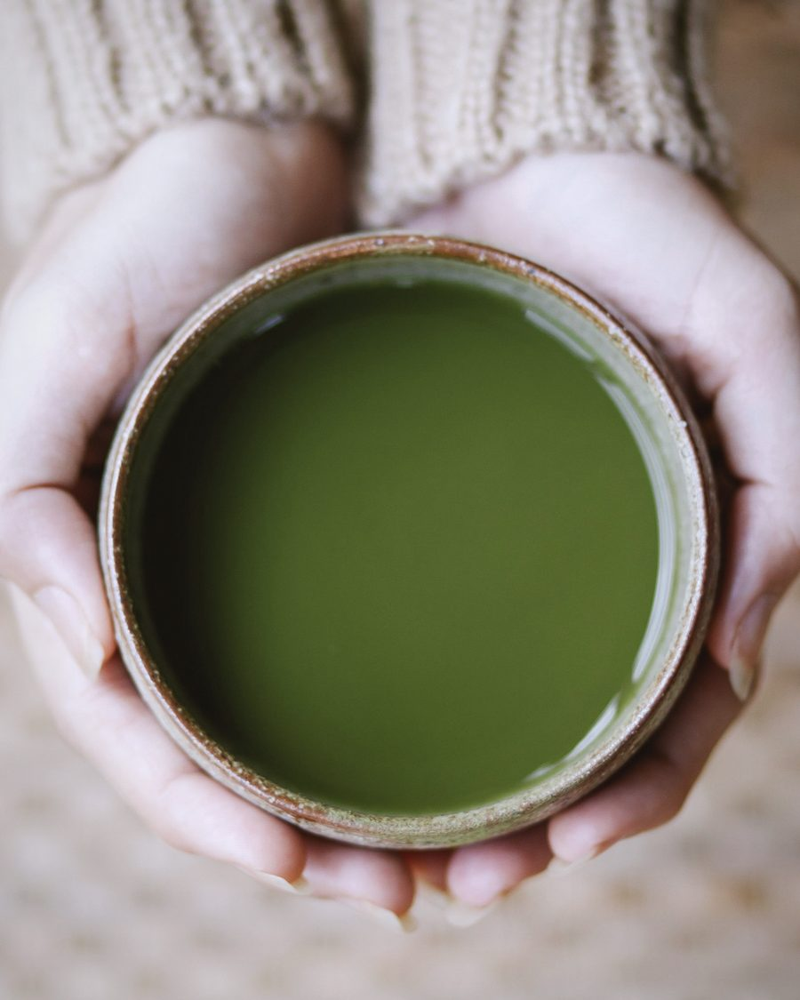
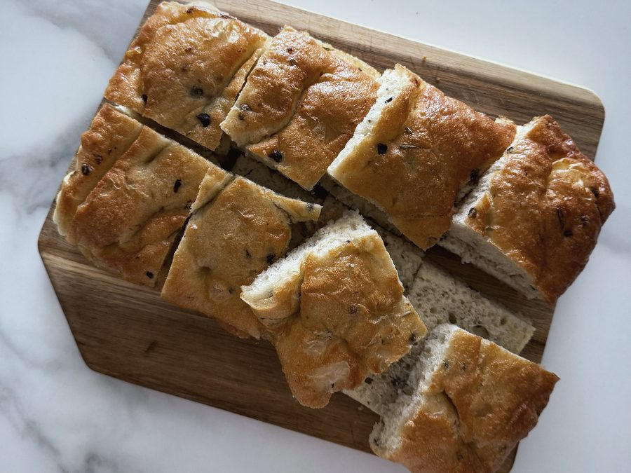
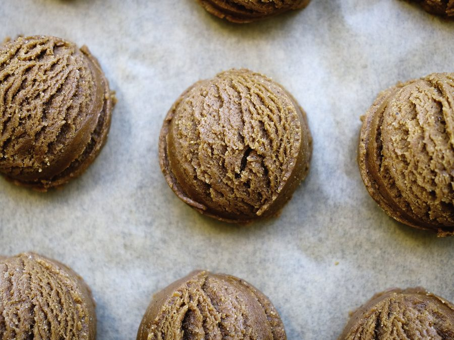
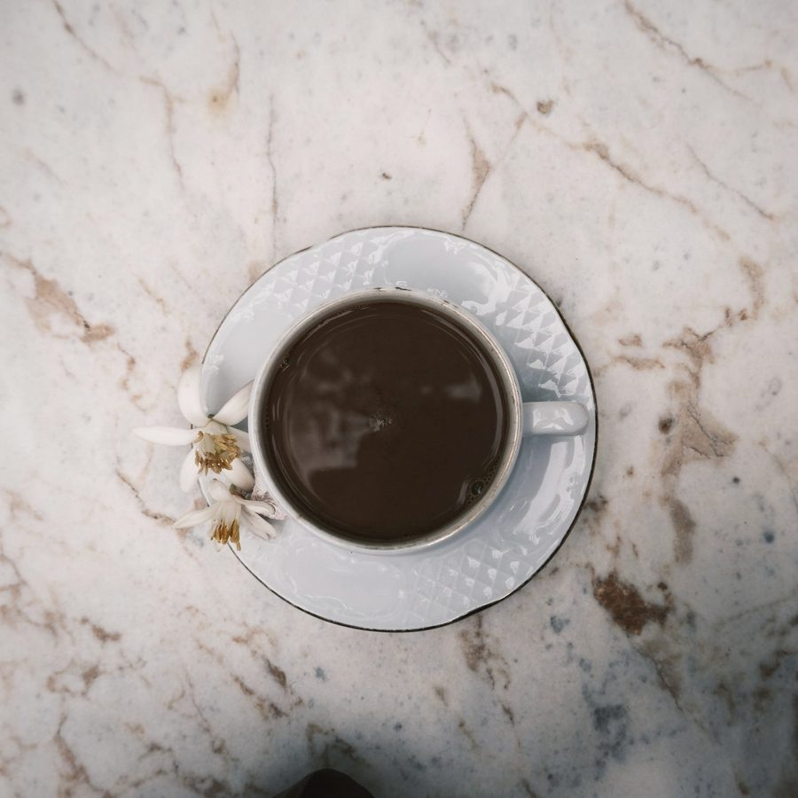
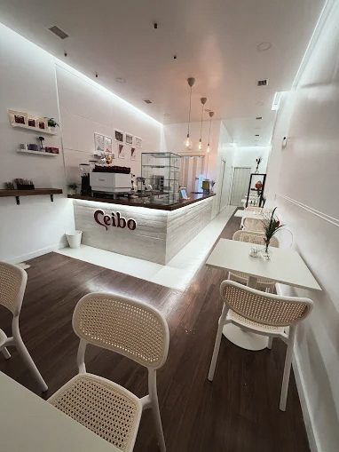
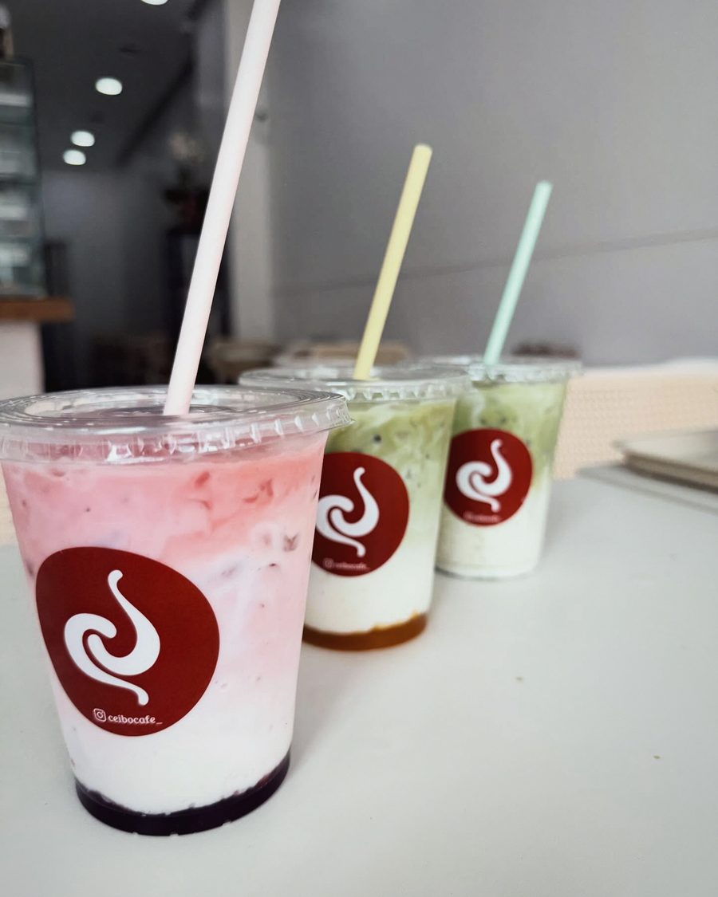
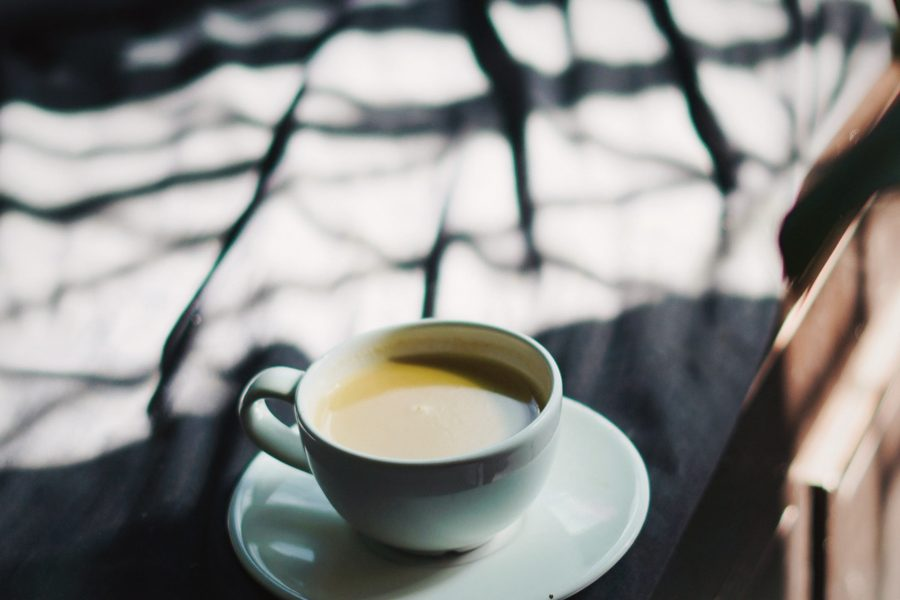
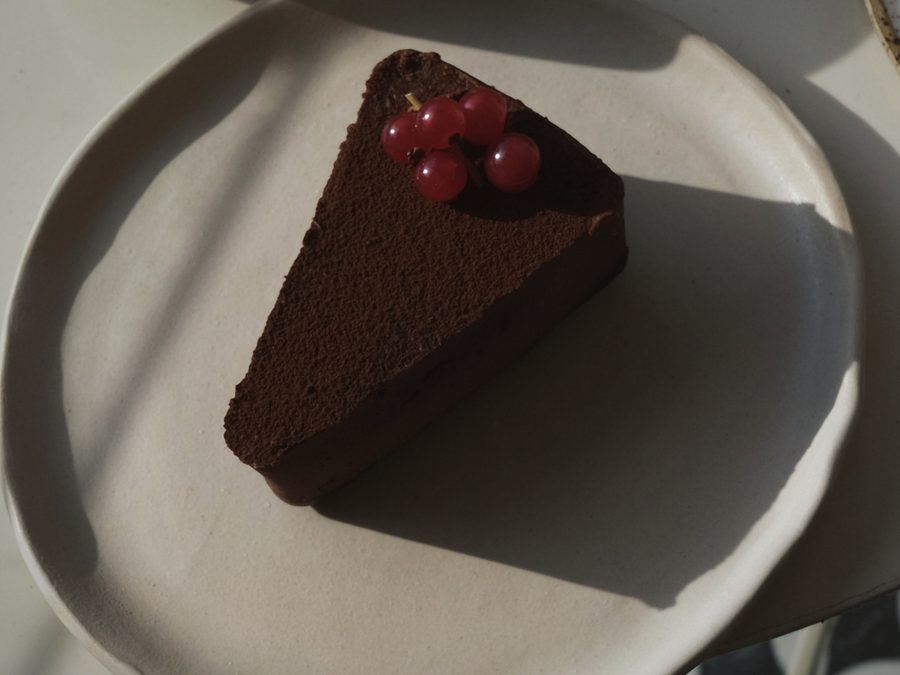
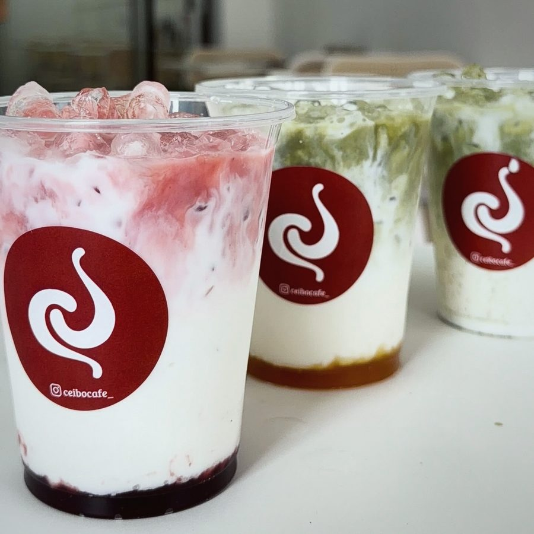
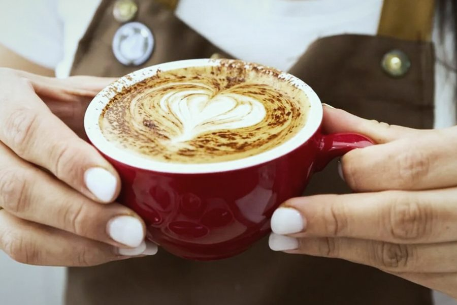

I
Café
De especialidad, tostado reciente.
- Espresso[PRECIO PENDIENTE]
- Americano[PRECIO PENDIENTE]
- Flat white[PRECIO PENDIENTE]
- Latte[PRECIO PENDIENTE]
- [PRODUCTO PENDIENTE][PRECIO PENDIENTE]
- [PRODUCTO PENDIENTE][PRECIO PENDIENTE]
Rúa Camiño Novo, 18 · Carballo
Café de especialidad · Carballo
Erythrina crista-galli. El ceibo es una flor roja.
4,9 · 27 reseñas en Google
Lámina I · Racimo de ceibo
Qué es un ceibo
El ceibo es un árbol de flores rojas y carnosas que se abren en racimos cuando empieza el calor. Tomamos su nombre para una cafetería pequeña en la Rúa Camiño Novo: un sitio donde la mañana empieza con calma, con un café hecho con cuidado y una flor roja sobre la mesa.
[HISTORIA PENDIENTE · una o dos líneas de la dueña sobre por qué el café se llama Ceibo]
Abrió el 1 de mayo de 2026. Al frente está Oriana Gisela Frare, vinculada a la hostelería de Carballo (fuente: Diario de Bergantiños).
La carta
La carta completa, con los productos exactos, los precios y el origen de cada café, está en el destacado «Carta» del Instagram de Ceibo. Aquí, las tres ramas con lo que hay confirmado. [PRODUCTOS Y PRECIOS PENDIENTES DE LA CARTA REAL]
I
De especialidad, tostado reciente.
II
La rama verde de la carta.
III
Dulce y salado, a cualquier hora.



Café de especialidad
No es una marca ni un adjetivo de moda: es una forma de tratar el café desde la finca hasta la taza. Tres cosas, en concreto.
Se sabe de dónde viene cada café (región, finca o cooperativa) y quién lo tostó. La carta lo dice; aquí no inventamos ningún origen.
Café tostado hace semanas, no meses. Se nota en el aroma al moler y en una taza más limpia y dulce.
Molienda al momento, dosis medida y agua a su temperatura. Cada bebida se prepara como pide: corta, larga o con leche texturizada.

Una mañana en Ceibo

01
La puerta de la Rúa Camiño Novo, la luz de primera hora y el olor a café recién molido. Barra clara, madera, poco ruido.

02
Un espresso o un flat white. Un matcha con hielo. Una tosta o un trozo de focaccia. O lo que te apetezca ese día: la carta no es larga, es cuidada.

03
Mesa blanca, silla de rejilla, la calle al otro lado del cristal. Nadie te mete prisa.

04
Porque la mañana empezó bien. Y porque queda por probar el bizcocho, o la rama verde de la carta.
4,9
★★★★★
0 reseñas en Google
Reseñas
Cuatro de las 27 reseñas de Google, tal cual las escribieron (nombres abreviados).
Desde que cruzas la puerta de Ceibo, ya sabes que vas a disfrutar. Te recibe una combinación irresistible: el aroma intenso a café de especialidad recién molido y el olor a obrador casero que inunda todo el local. Todo lo que ofrecen está delicioso y se nota el cariño en cada elaboración. Sin duda, una parada obligatoria en Carballo para los que buscamos calidad y ese toque artesano tan difícil de encontrar.
Bird · Google · junio de 2026
Muy buen café de especialidad en Carballo. Un ambiente muy acogedor y tranquilo. Sin duda volveremos.
Jano A. · Google · julio de 2026
Un café riquísimo, la atención muy amable, agradable, a pesar de tener mucha gente el personal no estaba abrumado, nunca perdieron su amabilidad y sonrisa; los bocadillos excelentes.
Pilar M. · Google · mayo de 2026
¡El mejor café de la zona! Muy buen servicio, se nota que saben de café. El brownie buenísimo.
Jon C. · Google · agosto de 2026
1.092 seguidores. Las novedades, los horarios de cada semana y el destacado «Carta» están allí. [HUECOS DEL FEED: 4 fotos reales pasadas por el cliente + 2 pendientes]


Contacto
Ceibo · Café de especialidad
Rúa Camiño Novo, 18
15100 Carballo, A Coruña
Precio por persona: 1–10 €
Horario [HORARIO A CONFIRMAR CON LA DUEÑA]
| Lunes | Cerrado |
|---|---|
| Martes a jueves | 8:30–13:30 y 17:00–20:00 |
| Viernes | 8:00–13:00 y 17:00–20:00 |
| Sábado y domingo | 9:00–13:30 |
Hay tres versiones del horario publicadas (Google, Instagram y Páxinas Galegas); esta es la de Google, provisional.
[PENDIENTE] wifi · reservas · pedidos para llevar: sin confirmar, no se anuncian.